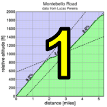

|  |  |
 |
| junior Andrew Biscardi makes the winning move. (Josh and Erica Hadley) |
It was perfect weather for Low-Key's return to the fearsome switchbacks of Quimby Road!
2012 has been the year of the Junior at Low-Key, and for the second week in a row the fastest male has been from that age group. Last week it was Adrien Costa, but this year it was Andrew Biscardi of team Tieni Duro who accelerated from the lead group to solo to the finish, shattering the existing Strava KOM on the climb previously held by Matt Allie and coming oh-so-close to breaking the 20-minute barrier. First of the rest, Tracy Colwell led a group of Low-Key familiars after riding week one on a tandem with his daughter Hadley. Carl Nielson finished third, followed by Clark Foy and Tim Clark. In addition to Andrew, both Clark and Carl beat Matt's KOM to qualify for the Strava T-shirt.
Leading the women for the second week in a row was last year's #1, Lisa Penzel. Fellow Brown Zoner Lynn Sestak was second, followed by multi-time Low-Key champion Janet Martinez making her traditional week 2 debut after sitting out Montebello to rest for that Sunday's Diablo Challenge. Laura Hipp and Hong Lam rounded out the top five in what was a solid women's field of 11 riders, the top four each beating the standing Strava QOM. Most dramatic, however, may have been the ferocious sprint for 10th, a taken at the line by Denise Primrose over Alison Chaiken, each smiling all the way. Exciting stuff.
Former Quimby Strava KOM Matt Allie was at the climb, but as a runner rather than as a cyclist. He traded the cycling KOM for the running course record, leading yours truly by close to five minutes, starting ahead and pulling steadily away. The Low-Key running record, however, remains firmly with Gary Gellin, who was still recovering from his attempt at the Tahoe Rim Trail record the previous week. Hopefully we get to see Gary again some time during the series.
In the hybrid electric division, Bill Bushnell once again showed the exceptional fitness he'd displaced at Montebello, finishing the climb in a remarkable 12:54.
In the team competition, it was once again Team Brown Zone, with the top two positions in the women's standings and a strong tenth in the men's division by "Rich Brown" despite a mechanical problem in his final sprint. The team's going to be very hard to beat.
Strava T-shirt qualifiers indicated with orange background. Note riders can only qualify once per series, so may not be listed even if they beat the target time for this week.
| pl | # | name | team | cat | time | mph | fph | score |
|---|---|---|---|---|---|---|---|---|
| 1 | 129 | Lisa Penzel | The Brown Zone | 45+ | 25:15 | 7.84 | 4040 | 123.61 |
| 2 | 146 | Lynn Sestak | The Brown Zone | 50+ | 26:33 | 7.46 | 3842 | 117.94 |
| 3 | 8 | Janet Martinez | Sr's & Mr's of No Mercy | 28:07 | 7.04 | 3628 | 111.78 | |
| 4 | 215 | Laura Hipp | Western Wheelers | 4 | 30:21 | 6.52 | 3361 | 104.07 |
| 5 | 221 | Hong Lam | 30+ | 32:53 | 6.02 | 3102 | 96.55 | |
| 6 | 79 | Lisa Emmerich | Sr's & Mr's of No Mercy | 50+ | 33:04 | 5.99 | 3085 | 96.05 |
| 7 | 209 | Hanneke de Groot | Pan y Agua | 45+ | 36:22 | 5.44 | 2805 | 87.88 |
| 8 | 228 | Peg Miller | Sr's & Mr's of No Mercy | 55+ | 37:45 | 5.25 | 2702 | 84.86 |
| 9 | 233 | Christy Smith | IronData Thirsty Bear | 38:01 | 5.21 | 2683 | 84.30 | |
| 10 | 245 | Denise Primrose | Sr's & Mr's of No Mercy | 55+ | 38:26 | 5.15 | 2654 | 83.45 |
| 11 | 50 | Alison Chaiken | Sr's & Mr's of No Mercy | 50+ | 38:26 | 5.15 | 2654 | 83.45 |
reference time for division Women = 31:40
| pl | # | name | team | cat | time | mph | fph | score |
|---|---|---|---|---|---|---|---|---|
| 1 | 202 | Andrew Biscardi | Tieni Duro | Junior 17/18 | 20:04 | 9.87 | 5083 | 128.59 |
| 2 | 64 | Tracy Colwell | Team Colwell | 40+ | 20:34 | 9.63 | 4959 | 125.66 |
| 3 | 230 | Carl Nielson | Sr's & Mr's of No Mercy | 50+ | 20:36 | 9.61 | 4951 | 125.47 |
| 4 | 212 | Clark Foy | Western Wheelers | 45+ | 20:59 | 9.44 | 4861 | 123.33 |
| 5 | 56 | Tim Clark | Low-Key | 45+ | 21:06 | 9.38 | 4834 | 122.69 |
| 6 | 59 | David Collet | 40+ | 21:12 | 9.34 | 4811 | 122.15 | |
| 7 | 226 | Steven Mielich | San Jose Bike Club | 50+ | 21:29 | 9.22 | 4748 | 120.64 |
| 8 | 120 | Rob Manchester | 35+ | 21:38 | 9.15 | 4715 | 119.86 | |
| 9 | 125 | Alan Nevin | IronData Thirsty Bear | 40+ | 21:42 | 9.12 | 4700 | 119.51 |
| 10 | 38 | Rich Brown | The Brown Zone | 35+ | 21:45 | 9.10 | 4690 | 119.26M |
| 11 | 44 | Ciaran Byrne | Sr's & Mr's of No Mercy | 40+ | 21:50 | 9.07 | 4672 | 118.83 |
| 12 | 149 | Daryl Spano | San Jose Bike Club | 45+ | 22:06 | 8.96 | 4615 | 117.49 |
| 13 | 92 | Rich Hill | LGBRC | 45+ | 22:11 | 8.93 | 4598 | 117.08 |
| 14 | 95 | Jared Hudson | SquadraSF | 30+ | 22:18 | 8.88 | 4574 | 116.50 |
| 15 | 172 | Morgan Raines | Bike Trip/Symantec | 40+ | 22:21 | 8.86 | 4564 | 116.26 |
| 16 | 7 | James Porter | Western Wheelers | 3 | 22:34 | 8.77 | 4520 | 115.22 |
| 17 | 213 | Chris Furgiuele | Dolce Vita Cycling | 35+ | 22:37 | 8.75 | 4510 | 114.98 |
| 18 | 162 | Ben Weir | Western Wheelers | 30+ | 22:49 | 8.68 | 4470 | 114.04 |
| 19 | 222 | Weston Lane | GPC | 25+ | 23:08 | 8.56 | 4409 | 112.57 |
| 20 | 80 | Joe Fant | The Brown Zone | 50+ | 23:17 | 8.50 | 4381 | 111.90 |
| 21 | 236 | Ryan Stroup | Quadzilla Racing | 30+ | 23:33 | 8.41 | 4331 | 110.71 |
| 22 | 35 | Blue Brown | The Brown Zone | Meat Based | 23:34 | 8.40 | 4328 | 110.64 |
| 23 | 70 | Andy Crews | Diablo | 40+ | 23:34 | 8.40 | 4328 | 110.64 |
| 24 | 175 | Alexander Komlik | San Jose Bike Club | 45+ | 23:55 | 8.28 | 4265 | 109.12 |
| 25 | 239 | Dennis Van Hoof | Type 1 Diabetes | 35+ | 24:02 | 8.24 | 4244 | 108.63 |
| 26 | 210 | Brian Edwards | 35+ | 24:03 | 8.23 | 4241 | 108.56 | |
| 27 | 151 | Tom Stanis | 35+ | 24:05 | 8.22 | 4235 | 108.42 | |
| 28 | 231 | Travis Retzer | Eden Bicycles | 4 | 24:06 | 8.22 | 4232 | 108.35 |
| 29 | 117 | Jeff Lin | 40+ | 24:23 | 8.12 | 4183 | 107.17 | |
| 30 | 238 | Tim Sullivan | 45+ | 24:24 | 8.11 | 4180 | 107.10 | |
| 31 | 41 | Ron Brunner | The Brown Zone | 40+ | 24:27 | 8.10 | 4172 | 106.90 |
| 32 | 232 | Antonio Ricalde | 35+ | 24:30 | 8.08 | 4163 | 106.69 | |
| 33 | 36 | Bobby Brown | The Brown Zone | 50+ | 24:34 | 8.06 | 4152 | 106.42 |
| 34 | 78 | Bill Dvorak | 55+ | 24:37 | 8.04 | 4144 | 106.22 | |
| 35 | 97 | Martin Hyland | Western Wheelers | 55+ | 24:56 | 7.94 | 4091 | 104.96 |
| 36 | 142 | Naoto Sato | 45+ | 24:57 | 7.94 | 4088 | 104.89 | |
| 37 | 108 | Joe Karbowski | 30+ | 25:00 | 7.92 | 4080 | 104.69 | |
| 38 | 37 | Dino Brown | The Brown Zone | Dual Suspension Beast | 25:04 | 7.90 | 4069 | 104.43 |
| 39 | 161 | Alan Weatherall | San Jose Bike Club | 50+ | 25:19 | 7.82 | 4029 | 103.47 |
| 40 | 136 | Doug Reynolds | Pan y Agua | 60+ | 25:26 | 7.79 | 4010 | 103.02 |
| 41 | 130 | Jim Perreira | 45+ | 25:27 | 7.78 | 4008 | 102.96 | |
| 42 | 241 | Alex Wild | Trail Head Cyclery | 4: 20 | 25:34 | 7.74 | 3990 | 102.52 |
| 43 | 110 | Franz Kelsch | Pan y Agua | 65 Almost | 25:35 | 7.74 | 3987 | 102.46 |
| 44 | 145 | Takanobu Seimiya | Nikon Cycling Club | 40+ | 25:36 | 7.73 | 3984 | 102.40 |
| 45 | 73 | J.D. Daniels | Eden Bicycles | 35+ | 25:36 | 7.73 | 3984 | 102.40 |
| 46 | 132 | Ryan Powell | Team Joe Karbowski | 35+ | 25:38 | 7.72 | 3979 | 102.27 |
| 47 | 203 | Adam Brinkman | 30+ | 25:42 | 7.70 | 3969 | 102.02 | |
| 48 | 39 | Slow Brown | The Brown Zone | Two Flat Tires | 26:05 | 7.59 | 3911 | 100.62 |
| 49 | 46 | Gonzalo Carrillo | Team Fremont FFBC p/b Chipotle | 45+ | 26:06 | 7.59 | 3908 | 100.56 |
| 50 | 223 | Liehann Loots | 35+ | 26:20 | 7.52 | 3873 | 99.73 | |
| 51 | 243 | Eric Doelling | 50+ | 26:20 | 7.52 | 3873 | 99.73 | |
| 52 | 242 | Aki Yamakawa | 35+ | 26:27 | 7.49 | 3856 | 99.32 | |
| 53 | 208 | Mike Davis | LGBRC | 45+ | 26:58 | 7.34 | 3782 | 97.54 |
| 54 | 246 | Chris Kovacs | Eden Bicycles | 35+ | 27:11 | 7.28 | 3752 | 96.81 |
| 55 | 205 | Crist Clark | Webcor/Alto Velo | 40+ | 27:15 | 7.27 | 3743 | 96.59 |
| 56 | 99 | Peter Ingram | Independent. | 55+ | 27:26 | 7.22 | 3718 | 95.98 |
| 57 | 156 | Toshi Tajima | 45+ | 27:30 | 7.20 | 3709 | 95.77 | |
| 58 | 133 | Thomas Preisler | LGBRC | 55+ | 27:42 | 7.15 | 3682 | 95.12 |
| 59 | 218 | Terrance Kloeckl | 50+ | 27:49 | 7.12 | 3667 | 94.75 | |
| 60 | 240 | David Vrane | Sr's & Mr's of No Mercy | 45+ | 28:04 | 7.05 | 3634 | 93.96 |
| 61 | 159 | Plamen Velikov | SLACer | 28:15 | 7.01 | 3611 | 93.39 | |
| 62 | 43 | Scott Byer | 45+ | 28:36 | 6.92 | 3566 | 92.32 | |
| 63 | 100 | Tim Irvine | LGBRC | 40+ | 28:51 | 6.86 | 3536 | 91.57 |
| 64 | 48 | Peter Cathcart | San Jose Bike Club | 50+ | 29:07 | 6.80 | 3503 | 90.78 |
| 65 | 141 | Nico Sallembien | 35+ | 29:08 | 6.80 | 3501 | 90.73 | |
| 66 | 83 | Dave Fitch | Pan y Agua | 70+ | 29:15 | 6.77 | 3487 | 90.40 |
| 67 | 143 | Wink Saville | 60+ | 29:20 | 6.75 | 3477 | 90.16 | |
| 68 | 53 | Rolling Chicane | Western Wheelers | 40+ | 29:26 | 6.73 | 3465 | 89.87 |
| 69 | 77 | Frank Drobot | Western Wheelers | 60+ | 29:35 | 6.69 | 3448 | 89.44 |
| 70 | 147 | Jeff Shute | 30+ | 29:36 | 6.69 | 3446 | 89.40 | |
| 71 | 135 | Mihai R. | 30+ | 29:41 | 6.67 | 3436 | 89.16 | |
| 72 | 67 | Richard Contreras | Team Rhus | 55+ | 30:02 | 6.59 | 3396 | 88.19 |
| 73 | 166 | Michael Williams | Sr's & Mr's of No Mercy | 40+ | 30:09 | 6.57 | 3383 | 87.87 |
| 74 | 65 | Kevin Comerford | Sr's & Mr's of No Mercy | 30+ | 30:10 | 6.56 | 3381 | 87.82 |
| 75 | 124 | Robert Navasca | Pedalista | 40+ | 30:12 | 6.56 | 3377 | 87.73 |
| 76 | 40 | Rich Brunner | Santa Clara | 40+ | 30:14 | 6.55 | 3374 | 87.64 |
| 77 | 84 | Stephen Fong | CyclePath Racing | 45+ | 30:26 | 6.51 | 3352 | 87.10 |
| 78 | 206 | Jay Cohan | Spike the Wonder Dog | 45+ | 30:39 | 6.46 | 3328 | 86.53 |
| 79 | 152 | Holger Steinbach | IronData Thirsty Bear | 45+ | 30:41 | 6.45 | 3324 | 86.44 |
| 80 | 127 | Bart Niechwiej | 35+ | 30:43 | 6.45 | 3321 | 86.35 | |
| 81 | 169 | Nic Brummell | Atlas | 50+ | 31:05 | 6.37 | 3282 | 85.40 |
| 82 | 58 | Kevin Colagiovanni | Team DUD | 25+ | 31:10 | 6.35 | 3273 | 85.19 |
| 83 | 26 | Bernard Bell | 50+ | 31:29 | 6.29 | 3240 | 84.38 | |
| 84 | 250 | Vito Lippolis | 40+ | 31:45 | 6.24 | 3213 | 83.72 | |
| 85 | 76 | Pierre Doussiere | 50+ | 31:46 | 6.23 | 3211 | 83.68 | |
| 86 | 225 | Thomas Maslen | Western Wheelers | 50+ | 32:23 | 6.11 | 3150 | 82.19 |
| 87 | 234 | Tommy Aldo Sonin | 30+ | 33:49 | 5.86 | 3016 | 78.93 | |
| 88 | 251 | Vu Ha | 40+ | 34:11 | 5.79 | 2984 | 78.13 | |
| 89 | 126 | Ronald Ng | 45+ | 35:34 | 5.57 | 2868 | 75.29 | |
| 90 | 29 | Sachin Bhatia | 30+ | 36:17 | 5.46 | 2811 | 73.90 | |
| 91 | 68 | Alex Cortez | Team Fremont FFBC p/b Chipotle | 40+ | 38:53 | 5.09 | 2623 | 69.27 |
| 92 | 148 | Gregory P. Smith | 35+ | 40:46 | 4.86 | 2502 | 66.27 | |
| 93 | 217 | Ashutosh Kaushik | 25+ | 60:07 | 3.29 | 1697 | 46.08 |
reference time for division Men = 26:15
| pl | # | name | team | cat | time | mph | fph | score |
|---|---|---|---|---|---|---|---|---|
| 1 | 171 | Russell Stevens | Western Wheelers | 40+ | 36:20 | 5.45 | 2807 | 80.88 |
| 235 | Sheila Stevens | Western Wheelers | 40+ |
| pl | # | name | team | cat | time | mph | fph | score |
|---|---|---|---|---|---|---|---|---|
| 1 | 6 | Bill Bushnell | Low-Key | It's Mostly The Bike | 12:54 | 15.35 | 7907 | 116.99 |
reference time for division Hybrid Electric = 15:15
| pl | # | name | team | cat | time | mph | fph | score |
|---|---|---|---|---|---|---|---|---|
| 1 | 201 | Matt Allie | Labor Power | 35+ | 27:27 | 7.21 | 3716 | 95.93 |
| 2 | 1 | Daniel Connelly | Low-Key | 3 | 31:36 | 6.27 | 3228 | 84.09 |
reference time for division Male Runner = 26:15
| pl | team | score | riders |
|---|---|---|---|
| 1 | The Brown Zone | 360.81 | Rich Brown, Joe Fant, Blue Brown, Ron Brunner, Bobby Brown, Dino Brown, Lisa Penzel, Slow Brown, Lynn Sestak |
| 2 | Sr's & Mr's of No Mercy | 356.09 | Carl Nielson, Ciaran Byrne, David Vrane, Janet Martinez, Michael Williams, Kevin Comerford, Lisa Emmerich, Peg Miller, Denise Primrose, Alison Chaiken |
| 3 | Western Wheelers | 352.58 | Clark Foy, James Porter, Ben Weir, Martin Hyland, Rolling Chicane, Frank Drobot, Laura Hipp, Thomas Maslen, Russell Stevens, Sheila Stevens |
| 4 | San Jose Bike Club | 347.26 | Steven Mielich, Daryl Spano, Alexander Komlik, Alan Weatherall, Peter Cathcart |
| 5 | Low-Key | 323.78 | Bill Bushnell, Tim Clark, Daniel Connelly |
| 6 | 322.68 | Tom Stanis, Jeff Lin, Tim Sullivan, Liehann Loots, Toshi Tajima, Scott Byer, Wink Saville, Jeff Shute, Mihai R., Bart Niechwiej, Hong Lam, Gregory P. Smith | |
| 7 | LGBRC | 309.73 | Rich Hill, Mike Davis, Thomas Preisler, Tim Irvine |
| 8 | Eden Bicycles | 307.55 | Travis Retzer, J.D. Daniels, Chris Kovacs |
| 9 | Pan y Agua | 295.88 | Doug Reynolds, Franz Kelsch, Dave Fitch, Hanneke de Groot |
| 10 | IronData Thirsty Bear | 290.26 | Alan Nevin, Holger Steinbach, Christy Smith |
| 11 | Team Fremont FFBC p/b Chipotle | 169.83 | Gonzalo Carrillo, Alex Cortez |
| 12 | Tieni Duro | 128.59 | Andrew Biscardi |
| 13 | Team Colwell | 125.66 | Tracy Colwell |
| 14 | SquadraSF | 116.50 | Jared Hudson |
| 15 | Bike Trip/Symantec | 116.26 | Morgan Raines |
| 16 | Dolce Vita Cycling | 114.98 | Chris Furgiuele |
| 17 | GPC | 112.57 | Weston Lane |
| 18 | Quadzilla Racing | 110.71 | Ryan Stroup |
| 19 | Diablo | 110.64 | Andy Crews |
| 20 | Type 1 Diabetes | 108.63 | Dennis Van Hoof |
| 21 | Trail Head Cyclery | 102.52 | Alex Wild |
| 22 | Nikon Cycling Club | 102.40 | Takanobu Seimiya |
| 23 | Team Joe Karbowski | 102.27 | Ryan Powell |
| 24 | Webcor/Alto Velo | 96.59 | Crist Clark |
| 25 | Independent. | 95.98 | Peter Ingram |
| 26 | Labor Power | 95.93 | Matt Allie |
| 27 | SLACer | 93.39 | Plamen Velikov |
| 28 | Team Rhus | 88.19 | Richard Contreras |
| 29 | Pedalista | 87.73 | Robert Navasca |
| 30 | Santa Clara | 87.64 | Rich Brunner |
| 31 | CyclePath Racing | 87.10 | Stephen Fong |
| 32 | Spike the Wonder Dog | 86.53 | Jay Cohan |
| 33 | Atlas | 85.40 | Nic Brummell |
| 34 | Team DUD | 85.19 | Kevin Colagiovanni |